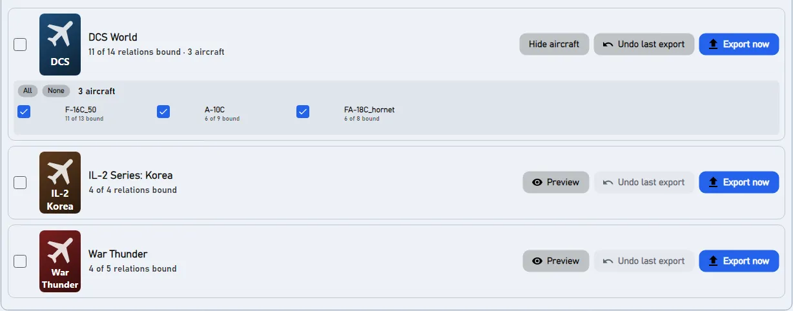

DCS sparar sina kontroller per flygplan och per enhet: varje modul har sina egna bindningar på din styrspak, och DCS lägger till sina egna standardbindningar på varje enhet. JoyPro läser in de här filerna i en profil, låter dig bygga relationer som täcker alla dina flygplan på en gång ("Gear" i F-16C, F/A-18C och A-10C II) och skriver tillbaka dem i varje flygplans filer. Ingenting körs medan du flyger: DCS läser sina egna filer som vanligt.
DCS World nativ (egna bindningsfiler)
- Stöd
- nativ (egna bindningsfiler)
- Motorkommando
engine dcs- Bindningsfil
Saved Games\DCS\Config\Input\<aircraft>\joystick\<device>.diff.lua(Lua-diff), tangentbord och modifiers.lua; sidofil.jp- Ingångar som spelet läser
- läser 128 knappar, 8 axlar, 4 hattar per joystick (dokumenterat)
- Kommandolista från
- installationens ingångs-Lua-filer, körda av DCS egen
luae.exe(DCS förblir stängt) - Test i spelet
- 56/56 steg godkända (2026-10-11)
- ✓ Importera
- ✓ Exportera
- ✓ Tangentbordsbindningar
- ✓ Modifierare
- ✓ Kommandolista byggd på din dator
- ✓ Spelbevakare
- ✓ Axelkurvor och dödzoner
- ✗ Spelets kontrollinställningarDCS sparar sina force feedback-inställningar per enhet och flygplan (FF Tune), se Force feedback i spelet; det finns inga spelövergripande kontrollinställningar att hantera.
- ✓ Force feedback-inställningar i spelet
- ✓ Force feedback från telemetri
- ✓ Telemetriinspelning
- ✓ Virtuell joystick (vJoy)
- ◐ Virtuell Xbox-handkontroll
- ✓ Virtuella funktioner
- ✓ Konfigurationsguide / Tilldela automatiskt
- ✓ Cockpits
- ✓ Fusklappar
- ✓ Test i spelet
Från stödmatrisen, genererad från motorns kod: alla spel.
#Kom igång i 3 steg
- Ställ in allt åt mig
på sidan Start - Använd de här knapparna
titta på listan först - Skriv till mitt spel
håll DCS stängt
Före: om kortet för DCS på sidan Start ber om en kommandolista trycker du först på Bygg lista.
Sedan: starta DCS. Dina bindningar finns i Options > Controls, för varje flygplan.
Har du bundit knappar i DCS tidigare? Då erbjuder sidan Start Importera, fyll sedan luckorna. Dina bindningar finns kvar, och bara lediga knappar får nya uppgifter. Se Snabbstart: få min styrspak att fungera.
#Var ska funktionerna ligga?
Konfigurationen ställer en stor fråga, med ett skjutreglage. Den spelar störst roll i DCS, eftersom du flyger många olika flygplan.
| Vänstra änden | Högra änden |
|---|---|
| Samma knapp för samma uppgift i alla flygplan | Där det riktiga flygplanet har den |
| Landstället ligger på samma knapp i alla flygplan. Lätt att lära sig. | Varje knapp gör det som knappen på samma ställe på den riktiga spaken gör. |
Snabbkonfigurationen använder ditt senaste val (mitten första gången). Kanonen och gasreglaget flyttas aldrig. Se Var ska funktionerna ligga?.
#Se dig omkring utan huvudspårning
Ingen TrackIR, ingen VR? Konfigurationen lägger att se sig omkring på en hatt på din styrspak: framåt, bakåt, vänster och höger. En tumspak på ditt gasreglage kan få axlarna för att se sig omkring. Se Huvudspårning och att se sig omkring.
Konfigurationen ställer först en fråga: Använder du huvudspårning eller VR? Ja (huvudspårning, ansiktsspårning, Tobii eller VR, eller du tänker skaffa det): inga vyknappar på dina enheter, bara "centrera vyn". Nej: att se sig omkring får en bra plats på en hatt på din styrspak.
#Dina bindningar på kneeboarden
DCS kan visa en sida per flygplan på sin kneeboard. JoyPro lägger en lista över dina knappar där: öppna Layout, tryck på Fusklappar och sedan på Lägg på kneeboarden. Öppna kneeboarden i cockpit: din sida finns där. Se Se mina bindningar på DCS-kneeboarden.
#Vad JoyPro gör för DCS
- Importera: varje flygplans bindningar på dina styrspakar, gasreglage och pedaler kommer in i din profil, med dina modifierare och axelinställningar. Som standard kommer även DCS standardbindningar som är aktiva på dina enheter in, så att inget går förlorat när du exporterar igen.
- Relationer: en relation är en funktion i alla flygplan. "Weapon release" kan vara pickle-knappen i F-16C och i A-10C II, med en knapp på din styrspak.
- Exportera: JoyPro skriver filerna för varje ikryssat flygplan. DCS visar sedan dina bindningar i Options > Controls.
#Importera dina bindningar från DCS
- Öppna Start. Kortet för DCS visar spelets bild. Om kortet ber om en kommandolista trycker du först på Bygg lista: JoyPro läser varje installerad modul med DCS egen Lua (DCS förblir stängt; några sekunder upp till en minut).
- Tryck på Importera på kortet för DCS. Låt Alla mina DCS-flygplan vara ikryssat, eller kryssa ur det och välj de flygplan du flyger.
- Tryck på Importera nu. Se mina relationer öppnar det som kom in.


#Bygg och kontrollera relationer
På sidan Relationer listar en relation sin åtgärd per flygplan. Använd flygplansfiltret för att se en modul och flödet för relationer för att koppla ihop åtgärder från flera flygplan i en relation. Sedan Kontrollera på sidan Exportera: den hittar en knapp som gör två saker i samma flygplan innan DCS gör det.
#Exportera till DCS
- Stäng DCS. JoyPro vägrar att skriva medan DCS körs, eftersom DCS skriver sina filer när det avslutas.
- Öppna Exportera. På DCS-kortet listar Flygplan... alla flygplan i din profil: bara ikryssade flygplan skrivs, de andra behåller sina filer exakt som de är.
- Behåll det första valet, Ersätt på mina enheter med Rensa även mina andra enheter, om det är i JoyPro du ställer in dina spakar. Tryck på Exportera nu på DCS-kortet.



Starta DCS och öppna Options > Controls och välj sedan flygplanet högst upp. Dina bindningar finns i enhetens kolumn under DCS egna kommandonamn; DCS-standarder som JoyPro tog bort visas som tomma celler; dina modifierare finns i DCS lista över modifierare. Axelkurvor visas i Axis Tune för axeln. Andra flygplan som du inte kryssade i ser ut som förut.
#Vad du gör själv i DCS
- Inget mer behövs för bindningarna. Om du använder en annan Saved Games-mapp (till exempel
Saved Games\DCS.openbeta) ställer du in den en gång i Inställningar > Spel under Kontroller sparas i. - För HUD:ens flygplan och för force feedback från telemetri installerar JoyPro ett litet skript i DCS en gång (se Avancerat); stäng DCS för det också.
#Vanliga fallgropar
- "DCS körs": stäng DCS (även startprogrammets bakgrundsprocess) och exportera igen.
- Ett flygplan behöll sina gamla bindningar: det var inte ikryssat under Flygplan... på DCS-kortet, eller så har profilen ingen relation för det.
- En spak har bindningar som du aldrig gjort: det är DCS standardbindningar på en enhet som JoyPro inte skrev. Kryssa i Rensa även mina andra enheter eller se Standardbindningar nedan.
- Två identiska enheter: DCS skiljer dem åt med deras instans-ID; låt Behandla enheter med samma namn som en enhet vara på, så att en enhet som Windows gav ett nytt ID läses som samma enhet.
- Ett kommando som DCS visar finns "inte i listan": en mod lade till det (till exempel Input Command Injector med ett community-paket med tangentbindningar). När sidan Start säger Dina DCS-moddar ändrade kontrollistan; bygg om kommandolistan trycker du en gång på Uppdatera DB där: JoyPro läser moddens kommandon på samma sätt som DCS. Kommandon som JoyPro hittar i dina DCS-bindningsfiler innan dess är redan kända och märkta från dina DCS-filer.
#Filer som JoyPro läser och skriver
| Fil | Vad det är |
|---|---|
%USERPROFILE%\Saved Games\DCS\Config\Input\<aircraft>\joystick\<device>.diff.lua |
dina bindningar på en enhet i ett flygplan, som skillnader mot DCS standardvärden (keyDiffs, axisDiffs med added / removed, ffDiffs) |
...\<aircraft>\joystick\<device>.jp |
JoyPros kopia med relationsnamn och grupper, som läses tillbaka vid nästa import |
...\<aircraft>\keyboard\Keyboard.diff.lua |
tangentbordet (bara när du exporterar tangentbordsbindningar) |
...\<aircraft>\modifiers.lua |
flygplanets modifierare |
<aircraft> är det namn på indataprofilen som modulen anger (till exempel F-16C_50, FA-18C_hornet). En annan Saved Games-mapp (DCS.openbeta) anges i Inställningar > Spel. Filerna skrivs utan byteordningsmärke (BOM), eftersom DCS Lua inte kan läsa in ett sådant.
#Kommandon från moddar
Vissa moddar lägger till kommandon i DCS kontrollista:
- Input Command Injector (av Quaggles, ofta med ett communitypaket med tangentbindningar): de extra kommandona finns i
Saved Games\DCS\InputCommands\<module>\Input\<profile>\joystick\default.lua(ochkeyboard), och injektorn i DCS-installationen (Scripts\Hooks) lägger ihop dem med modulens egen lista när DCS läser in kontrollerna. - Moduler i
Saved Games\DCS\Mods\aircraft: de har med sig sina egna kommandolistor.
JoyPros kommandolista (Bygg lista / Uppdatera DB) läser dem på samma sätt som DCS: från den Saved Games-mapp som din DCS-installation faktiskt använder (DCS.openbeta för en OpenBeta-installation), med injektorns kommandon inlagda när injektorn är installerad, och med samma kommando-id som DCS ger dem. När dina moddar ändras står det på Start Dina DCS-moddar ändrade kontrollistan; bygg om kommandolistan; en enda Uppdatera DB hämtar de nya kommandona.
Ett kommando som finns i dina DCS-bindningsfiler men ännu inte i kommandolistan (till exempel en modd du lade till efter att listan byggdes) är känt ändå: JoyPro tar dess exakta id och namn från filen och markerar det från dina DCS-filer på sidan Relationer, och Start föreslår en ombyggnad.
| Fil | Vad det är |
|---|---|
Saved Games\DCS\InputCommands\... |
Input Command Injectors extra kommandon (bara läsning) |
<data>\GameData\DcsCommandsFromYourFiles.tsv |
kommandon som hittats i dina DCS-bindningsfiler men som saknas i kommandolistan |
#Exportlägena i DCS
Varje läge arbetar med de bindningar som en enhetsfil har aktiva i DCS: enhetens standardvärden, minus det filen tar bort, plus det den lägger till. JoyPro skriver sedan bara verkliga skillnader mot standardvärdena, precis som DCS själv skulle göra.
| Läge | Vad som händer i det exporterade flygplanet |
|---|---|
| Bara lägga till | Ingenting tas bort. En bindning vars knapp DCS redan använder för ett annat kommando (även en DCS-standard) skrivs inte och får markeringen ”Inte skrivet till spelet”. |
| Uppdatera, behåll spelets bindningar | Dina bindningar läggs in; DCS standardvärden och dina bindningar från spelet finns kvar, utom en bindning för ett annat kommando på en knapp som du använder. |
| Uppdatera, min profil vinner | Som ovan, och varje kommando du binder förlorar sina andra knappar i det flygplanet (i varje enhetsfil och på anslutna enheter utan fil; DCS standardvärden räknas). |
| Ersätt på mina enheter | De enheter du skriver får exakt dina bindningar i det exporterade flygplanet, med DCS standardvärden borttagna. |
| + Rensa även mina andra enheter | Anslutna enheter utan bindning i flygplanet förlorar alla bindningar där, DCS standardvärden inräknade. |
Alternativ på sidan Exportera (under Alternativ och sökvägar (för experter)):
- Behåll tangentbordets standard (på): ingen tangentbordsfil skrivs. Av: dina tangentbordsbindningar skrivs, och bara de DCS-standardtangenter som de tar tas bort; alla andra standardtangenter finns kvar.
- Mina enheter förlorar DCS standardbindningar även i alla andra flygplan (av): med Ersätt töms de skrivna enheterna även i alla installerade flygplan som du inte exporterade. Indatalagren (UI-lagret, kamera, allmänt) rörs aldrig.


#Det som aldrig rörs
- Enheter som inte är anslutna behåller sina filer byte för byte.
- Importens ignorerade enheter och den vJoy-enhet som JoyPro tunnlar in i töms aldrig.
- Tangentbordet töms eller tas aldrig över, i något läge; musbindningar skrivs aldrig.
- Flygplan som du inte kryssade i, och indatalagren (UI-lagret, kamera, det allmänna lagret) behåller sina filer.
- Inställningar för force feedback (
ffDiffs) i en enhetsfil som töms finns kvar.
#Standardbindningar
DCS ger varje enhetstyp sina egna standardvärden per flygplan (en Warthog-styrspak får andra standardvärden än en vanlig styrspak). JoyPro känner till dem från rena profiler som den bygger från ditt DCS med kommandolistan: en per flygplan och enhetstyp. Ersätt och Rensa även tar bort exakt dessa standardvärden från de enheter de skriver.
För enheter som JoyPro inte skriver erbjuder Inställningar > DCS: standardbindningar två ändringar i själva DCS-installationen, båda avstängda om du inte slår på dem: ta bort standardvärdena från varje joystickfil (varje original sparas som <file>.nocombo.bak), eller flytta DCS enhetsspecifika standardfiler till JoyPros mapp för säkerhetskopior. Ändrade filer klarar inte integritetskontrollen på servrar som kräver den; Återställ DCS-filer lägger tillbaka alla original. Efter en DCS-uppdatering tillämpar JoyPro ett påslaget alternativ igen när JoyPro startar.
En enhetsfil innehåller bara skillnaderna mot DCS standardvärden: aktivt i DCS = standardvärdena, minus det filen tar bort, plus det den lägger till. Varje exportläge bestämmer vilka bindningar som ska vara aktiva; JoyPro skriver sedan bara skillnaden. Ett exempel i ett flygplan:
| I flygplanet | Vad enhetsfilen får |
|---|---|
| En DCS-standardbindning som du behåller | ingenting: den är redan standard (den listas bara i .jp) |
| En DCS-standardbindning som du inte vill ha | en ”removed”-rad |
| Din egen bindning som inte är standard | en ”added”-rad |
| En standardbindning med annan justering (kurva, invertering) | en ”changed”-rad |
#Flygplan, kurvor, force feedback
- Per flygplan: varje relation behåller sin åtgärd per flygplan; exporten skriver bara de flygplan som är ikryssade.
- Axelkurvor: dödzon, mättnad X och Y, krökning eller en användarkurva med 11 punkter, invertering och skjutreglage, skrivna per flygplan som DCS eget filter (det som Axis Tune visar). Standardkurva gäller för alla spel; en kurva kan också ställas in för DCS eller för ett enskilt flygplan (Bindningar > Axelrespons).
- Force feedback i spelet: Inställningar > DCS force feedback ställer in byt axel, invertera X och invertera Y per enhet (
engine dcs ffb set). Force feedback från telemetri: sidan Force feedback installerar JoyPros krokSaved Games\DCS\Scripts\Hooks\JoyProFfb.lua(DCS måste vara stängt; andra skript som SRS eller Tacview fortsätter att fungera). - HUD: HUD visar bindningarna för det flygplan du flyger när DCS-kroken är installerad (sidan HUD > Installera DCS-krok: en liten Lua-fil plus en skyddad rad i
Export.lua, som säkerhetskopieras först), eller så väljer du flygplanet manuellt. - Bevakning: en bindning du ändrar i DCS Options > Controls upptäcks när DCS har stängts; JoyPro frågar om den ska tas över. Bara de flygplan vars filer har ändrats jämförs, mot enhetens standardvärden plus dess diff.
#Inuti DCS-integrationen
flowchart LR
P["Din profil"] --> E["engine dcs export"]
C[("Rena profiler<br/>(DCS standardvärden)")] --> E
E --> D["device.diff.lua<br/>+ .jp"]
E --> M["modifiers.lua"]
D --> G["DCS: Options ><br/>Controls"]
L["Layout: Lägg på<br/>kneeboarden"] --> K["Kneeboard-<br/>sidor"]
Kod: engine\EngineDcsImport.cs, engine\EngineDcsExport.cs, engine\EngineDcsExport.Modes.cs, engine\EngineDcsRefresh.cs, engine\DcsDeviceNames.cs, engine\DcsCommandNames.cs, engine\EngineDcsDefaultsStrip.cs.
- Enhetsnamn: DCS namnger en joystick
<DirectInput instance name> {<instance GUID>}, med instansnamnet exakt som DirectInput rapporterar det, inklusive blanksteg i ändarna. JoyPros egna namn tar bort de blankstegen;DcsDeviceNameskonverterar åt båda hållen. Exporten namnger en fil efter den anslutna enhetens råa namn, efter en befintlig fil för en enhet som inte är ansluten, annars efter JoyPros namn. Filer som en äldre JoyPro skrev under det trimmade namnet läses när det inte finns någon fil med DCS-namnet och tas bort efter skrivningen (säkerhetskopieras). - Kommandolista:
engine dcs refresh idkör varje moduls indata-Lua i DCS egenbin\luae.exe(inget spelfönster), i flera körningar samtidigt; engelska kommandonamn kommer från installationensl10n\en\LC_MESSAGES\input.mo, oavsett vilket språk DCS använder.engine dcs refresh cleanbygger de rena profilerna: DCS egenInputData.clearProfilemed en låtsasstyrspak per enhetstyp, i en tillfällig Saved Games-mapp (dinConfig\Inputändras aldrig). Filer:%LOCALAPPDATA%\JoyPro2\GameData\CleanProfile\DCS\<aircraft>.cf,...\<aircraft>\<device type>.cf,KeyboardCleanProfile\DCS\<aircraft>.cf. - Importera:
engine dcs import(--planes,--only-connected,--merge-same-name,--include-defaults,--include-keyboard, justeringsväxlarna--import-*);engine dcs scanvisar samma sak utan att ändra profilen. - Exportera:
engine dcs export--mode clean|add|merge|merge-overwrite --nuke-untouched-devices true|false --keep-keyboard-defaults true|false --clean-all-aircraft true|false --planes <csv> --ignore-device <d>;--clear-keyboard-defaults true(bara på kommandoraden) tar även bort alla andra DCS-standardtangenter för de skrivna flygplanen. Säkerhetskopior: varje fil till<file>.jpbakoch till%LOCALAPPDATA%\JoyPro2\GameBackupsföre den första skrivningen. - Kontroll:
engine dcs verify-cleanlåter DCS egen Lua lista varje standardbindning som fortfarande är aktiv på dina joysticks (bara läsning;--include-disconnectedmed låtsasstyrspakar,--dump-activeför att jämföra före och efter en export). - Standardbindningar i installationen:
engine dcs strip-defaults(apply|restore|status|auto, markeringsraden-- [[DCS_STRIP_JOYSTICK_DEFAULTS v1]], original som.nocombo.bak, varje ändrad fil läses in av DCS laddare innan den räknas) ochengine dcs device-luas(list|remove|restore; filer flyttas till<data>\DcsDefaults\DeviceLuasmed ett manifest). Båda vägrar medan DCS eller dess uppdaterare körs. - Force feedback:
engine dcs ffb list,engine dcs ffb set,engine dcs ffb clear. - HUD-krok:
engine overlay dcs-hook status(install/remove): DCS skickar enhetstypen till127.0.0.1:1992.
#Kända begränsningar
- Bara installerade moduler får kommandolistor och rena profiler.
- En enhet som du har kört DCS axelguide för behåller guidens tilldelning som sin standard (
wizard.lua, per enhetsinstans); JoyPro ändrar inte den. - Indatalagren som DCS delar mellan flygplan (General, UI-lagret, Combined Arms) skrivs inte.
- Tester:
engine\tests\smoke\dcsexportmodes.ps1(varje läge, fram och tillbaka, ångra byte för byte),smoke\dcskeyboard.ps1,smoke\dcsdefaults.ps1; i spelettools\e2e\games\DCS.ps1ochDCSCurves.ps1.
Alla tekniska anteckningar om det här spelet (genererade från kodförrådet): dcs.md.